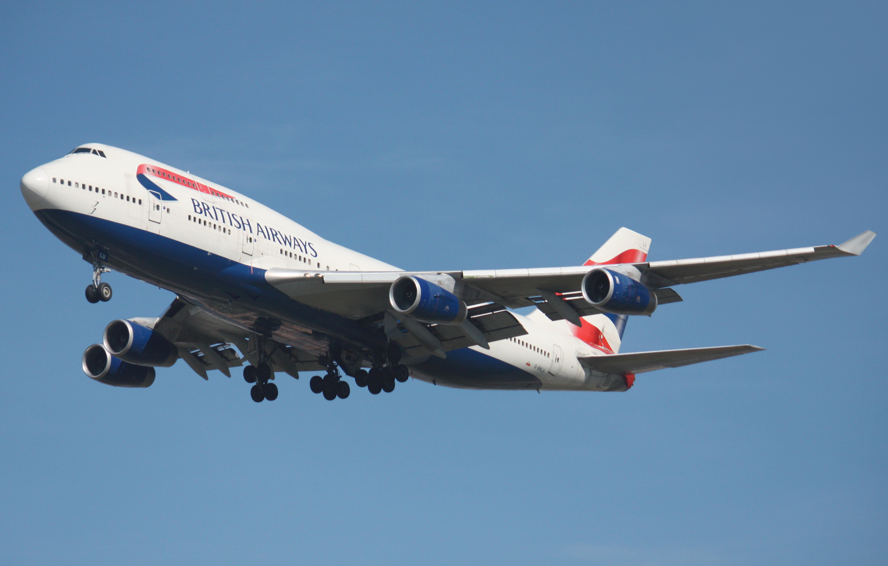
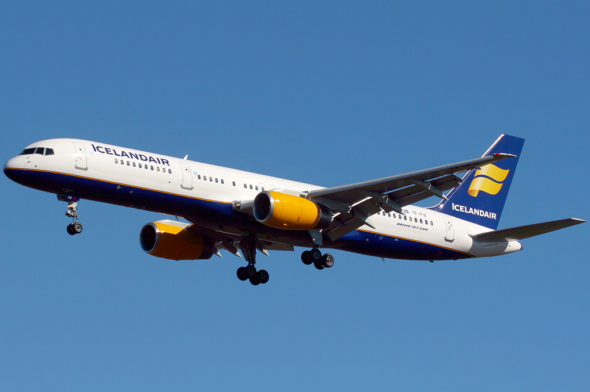
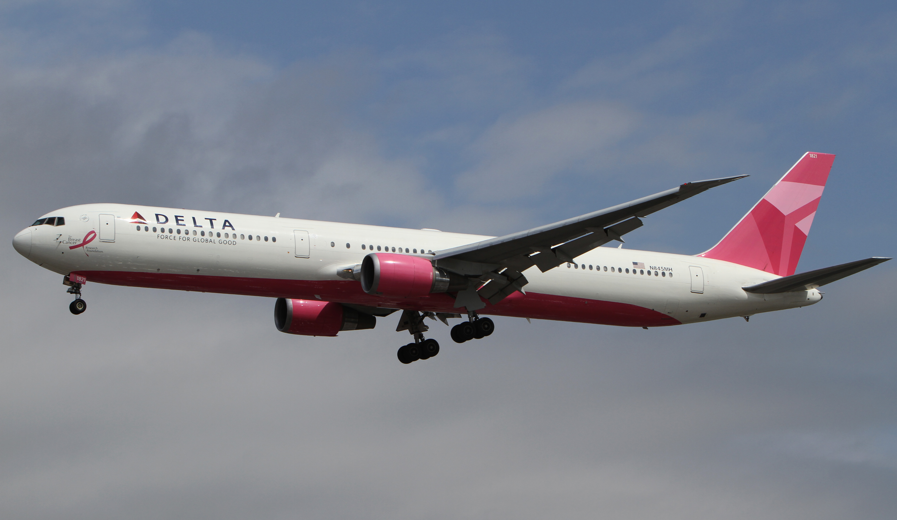
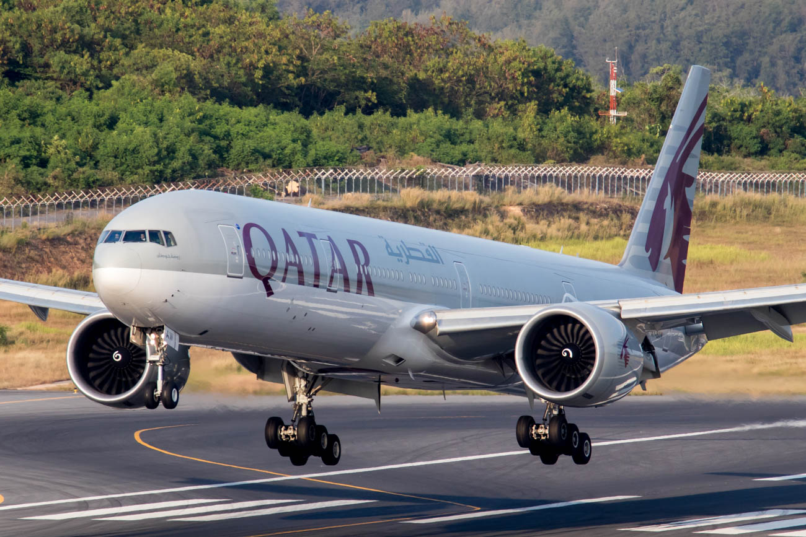
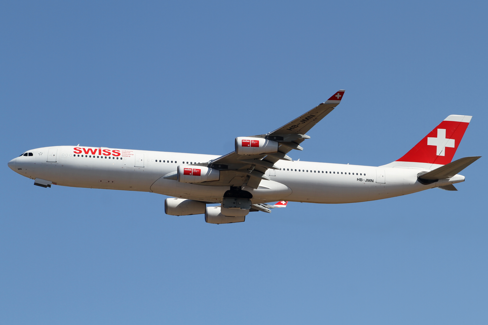

Common Commercial Aircraft
Boeing 737

The Boeing 737 is a narrow-body aircraft produced by Boeing at its Renton Factory in Washington. Developed to supplement the Boeing 727 on short and thin routes, the twinjet retains the 707 fuselage width and six abreast seating with two underwing turbofans.
Boeing 747

The Boeing 747 is a large, long-range wide-body airliner designed and manufactured by Boeing Commercial Airplanes in the United States. After introducing the 707 in October 1958, Pan Am wanted a jet 2+1⁄2 times its size, to reduce its seat cost by 30% to democratize air travel.
Boeing 757

The Boeing 757 is an American narrow-body airliner designed and built by Boeing Commercial Airplanes. The then-named 7N7, a twinjet successor for the 727, received its first orders in August 1978. The prototype completed its maiden flight on February 19, 1982 and it was FAA certified on December 21, 1982.
Boeing 767

The Boeing 767 is an American wide-body aircraft developed and manufactured by Boeing Commercial Airplanes. The aircraft was launched as the 7X7 program on July 14, 1978, the prototype first flew on September 26, 1981, and it was certified on July 30, 1982.
Boeing 777

The Boeing 777, commonly referred to as the Triple Seven, is an American long-range wide-body airliner developed and manufactured by Boeing Commercial Airplanes. It is the world's largest twinjet.
Boeing 787

The Boeing 787 Dreamliner is an American wide-body jet airliner developed and manufactured by Boeing Commercial Airplanes. After dropping its Sonic Cruiser project, Boeing announced the conventional 7E7 on January 29, 2003, focused on efficiency.
Airbus 220
The Airbus A220 is a family of five-abreast narrow-body airliners by Airbus Canada Limited Partnership. It was originally designed by Bombardier and had two years in service as the Bombardier CSeries.
Airbus 318/319/320/321

The Airbus A320 family is a series of narrow-body airliners developed and produced by Airbus. The A320 was launched in March 1984, first flew on 22 February 1987, and was introduced in April 1988 by Air France. The first member of the family was followed by the longer A321, the shorter A319, and the even shorter A318.
Airbus 330/340

The Airbus A330 is a wide-body aircraft developed and produced by Airbus. Airbus conceived several derivatives of the A300, its first airliner in the mid-1970s. Then the company began development on the A330 twinjet in parallel with the A340 quadjet and launched both designs with their first orders in June 1987.
Airbus 350

The Airbus A350 is a long-range, wide-body twin-engine jet airliner developed and produced by Airbus. The first A350 design proposed by Airbus in 2004, in response to the Boeing 787 Dreamliner, would have been a development of the A330 with composite wings and new engines.
Airbus 380

The Airbus A380 is a large wide-body airliner that was developed and produced by Airbus. It is the world's largest passenger airliner and only full-length double-deck jet airliner.
Embraer 170/175/190/195

The Embraer E-Jet family is a series of four-abreast narrow-body short- to medium-range twin-engine jet airliners, carrying 66 to 124 passengers, produced by Brazilian aerospace manufacturer Embraer. The aircraft family was first introduced at the Paris Air Show in 1999 and entered production in 2002.
Embrarer 135/145

The Embraer ERJ family are regional jets produced by Brazilian aerospace company Embraer. The EMB145 was launched in 1989 as a turbofan-powered stretch of the EMB 120 Brasilia turboprop. It first flew on 11 August 1995, and it received its type certificate on 10 December 1996.